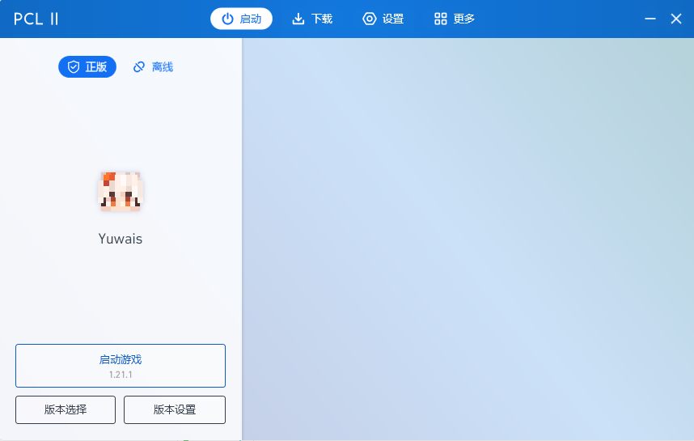

启动器下载（观点仅供参考）
主流启动器介绍与下载
主流启动器介绍与下载

特点：
1. 老牌启动器，用的是国内源且下载源多
2. 功能相对丰富
3. 有 macOS 与 Linux 版本（PCL 不具有的，除了官启外支持跨平台的启动器之一）

特点：
1. 一个知名的启动器，有国内源可以使用
2. 百宝箱中可以进行内存优化、清理垃圾，特别是那个【千万别点】
3. 自带多线程下载器
4. 帮助界面很有帮助，教程详细
5. 动画好看（个人认为）

特点：
1. 基于 PCL2，理论上 PCL2 的优点基本上都有
2. 功能比 PCL2 更加丰富，免费内置联机功能
3. 个人认为最好用的启动器（之一）

特点：
1. 可以启动基岩版、地下城等非 Java 版本
2. 不知道了
缺点：
安装模组、整合包等东西不方便，且使用的不是国内源
不建议作为 Java 版启动器使用

特点：
1. 不知道
2. 功能更丰富，但不一定用得上
3. 可以导出整合包，个人认为比 hmcl 和 pcl 的导出功能好一些
4. 个人认为启动 Servers 版更加方便，但不一定用得上
缺点：
使用的不是国内源而是国外源，安装版本时可能较慢或失败
需要手动汉化
特点：
可以制作模组，调式方便
缺点：
其他都是缺点
你还真想用这个？